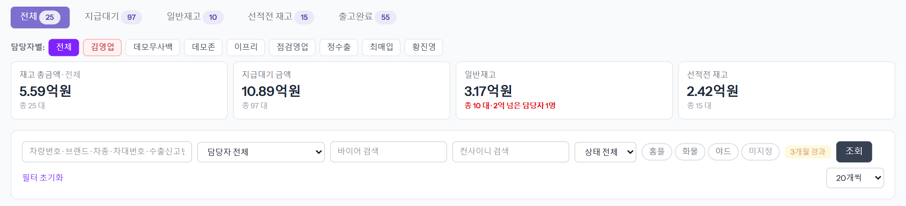
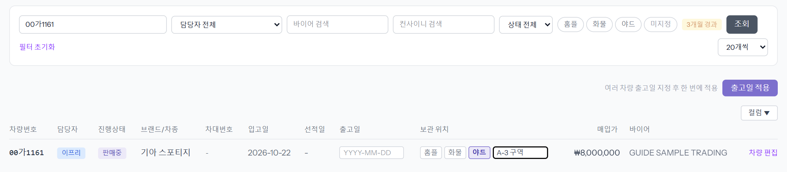
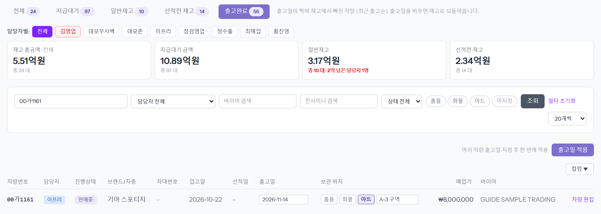
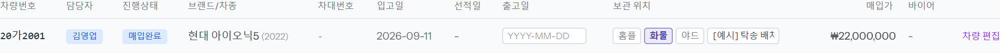

매입 대금을 다 치른 차는 「재고관리」에 재고로 잡힙니다. 여기서 담당자별 재고 금액을 보고, 차가 어디 서 있는지(보관위치)와 실제로 나간 날(출고일)을 적습니다. 출고일이 찍히면 그 차는 재고에서 빠져 「출고완료」로 갑니다. 예시 차량 00가1161.
| 탭 | 들어 있는 차 |
|---|---|
| 전체 | 지금 재고(대금 완납 + 아직 안 나감) = 일반재고 + 선적전 재고 |
| 지급대기 | 매입 대금이 남은 차(입고 전). 지급을 마치면 재고로 넘어갑니다 |
| 일반재고 | 재고 중 바이어도 판매가도 없는 차(바이어 미정 재고매입) |
| 선적전 재고 | 재고 중 바이어가 지정됐거나 판매가가 들어간, 아직 안 나간 차. 바이어만 지정하고 판매가를 아직 안 넣은 차도 여기입니다 |
| 출고완료 | 출고일이 찍혀 재고에서 빠진 차(최근 출고순) |
카드는 매입가 합을 억원 단위로 보여 줍니다(마우스를 올리면 원 단위). 담당자 이름을 누르면 아래 목록과 카드 금액이 그 담당자 것으로 바뀌고, 같은 이름을 다시 누르거나 「전체」를 누르면 풀립니다.

| 카드 | 뜻 |
|---|---|
| 재고 총금액 | 일반재고 + 선적전 재고. 지급대기는 입고 전이라 들어가지 않습니다 |
| 지급대기 금액 | 매입 대금이 남은 차들의 매입가 합 |
| 일반재고 | 바이어도 판매가도 없는 재고. 담당자 한 사람당 2억까지 |
| 선적전 재고 | 바이어가 지정됐거나 판매가가 들어간 재고 |
고른 버튼이 진하게 바뀝니다. 같은 버튼을 다시 누르면 해제됩니다. 비고 칸에는 「A-3 구역」처럼 찾기 쉬운 자리를 적습니다.

버튼을 눌러야 저장됩니다(누르기 전엔 화면에만 있음). 여러 차를 한꺼번에 고쳐 두고 한 번에 눌러도 됩니다.
「20261114」처럼 숫자 8자리로 쳐도 됩니다. 저장하면 그 차는 재고 탭들에서 빠지고 「출고완료」 탭에 나옵니다.

※ 잘못 찍었으면 출고완료 탭에서 출고일을 지우고 다시 [출고일 적용] — 재고로 되돌아옵니다.
탁송을 잡으면서 영업이 위치와 메모를 고치면 재고관리 그 차 줄의 보관 위치 버튼과 비고가 그대로 바뀝니다(따로 [출고일 적용]을 누를 필요 없음). 누가 언제 바꿨는지는 차량 기록에 남습니다. 반대로 ERP 에서 고친 위치도 board 에 그대로 보입니다.
